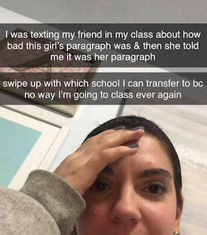

I can still taste the Einstein's Brothers plain bagel with onion and chive schmear that I would buy after this class. One of the iconic classes of being a first-year at Pitt. This is one of two classes that has over 400 students at Pitt (the other class is History of Jazz which I have not taken). This class gives a great foundational knowledge of some of the basic concepts of psychology. There was also a research requirement for you to be a participant in a research study which was a cool experience. For the study that I participated in, I only had to fill out a survey, but it was still cool!
I had this class once a week on Wednesday nights, so it always felt very long. It was a very interesting class, and it was not difficult as long as I kept up with the readings. One of the extra credit assignments involved watching the movie The Stanford Prison Project and writing a paper about it. I wish that I had not done this assignment becuase the movie was a little traumatizing for me, and my grade did not need the extra credit boost. It was great to build on the psychology concepts that I had learned in my introduction class in my first year, and I definitely don't regret taking it.
After taking this course, I am not entirely sure why I didn't just give up being pre-med then and there. Let's just say, I am not a STEM person. This was my first very large lecture at Pitt, and to make this easier my professor decided to put all of us into Process Oriented Guided Inquiry Learning, or POGIL, groups. These were groups of four people who were sitting around you, and we would all try to figure out how to do the problems in our workbooks. I had completely blocked this out of my memory, but it was very real. If you're pre-med, just make sure that you take advantage of all of the resources given to you from the get-go. Go to office hours. Meet with UTAs. Stay caught up with the homework and readings. Study study study!
This class was by far the worst class that I have taken at Pitt. I know I said earlier that I'm not a STEM person, but I am really not a STEM person. This class was truly my downfall. I had breakdowns outside of Hillman often when studying for this class. I made a group of friends in my lab, though, which was very fun. Pre-med students really do create good bonds because you're all struggling together. For some reason, even though I understood the concepts outside of class, I froze up during exams and would do terribly. Oh well. Fun fact: I got extra credit for sending this song to my chemistry professor since it was about solubility. She responded saying it was great, but I don't think the point was ever added to my grade. Not like it would have helped anyway, but I spent a while looking for the song! It's now in some of my playlists though, so no real harm was done.
Also technically may not be a gen ed, but I took this class in my first year when I was on the pre-med track. BIIG mistake for me. I am not a math person at all, and I already knew that I sucked at calc from when I did poorly in it in high school. However, I thought that my recent experience with calculus would help me out and that I would be able to get through it fine. My advisor also recommended a certain professor saying that she had heard lots of great reviews about her calculus class. Let's just say it did not go well for me...
For as much as I hated taking calculus at Pitt, I really loved taking stats. I think this is a testament to how much your professor really shapes your class experiences because the professor I had in this class was by far one of my favorite professors at Pitt. I took this class during spring 2020, and she handled the transition to online classes so well during the outbreak of the pandemic. She would even send us cute Tik Toks which I wanted to link, but it seems as though the URLs have changed.
As someone now studying public health, you may be able to guess that this is one of my favorite classes that I have taken at Pitt. The professor of this class actually wrote one of my recommendation letters for grad school with Pitt Public Health. We covered key public health topics like maternal health, access to insurance, and environmental health. My least favorite part was having to write a group paper. Well, maybe not so much the fact that I had to write the paper as much as it was that I accidentally texted a girl in my group telling her how bad her section of the paper was . . . Jordan, if you're reading this, I am so sorry :/ Let's just saw that sitting next to her the next day in class was very uncomfortable! Here's the photo that I posted on my private story on snapchat when this happened:
This reaction may have been a little dramatic. Everything ended up fine, and she knew that her paragraph was really bad. Learn from my mistakes and don't text people in your group about how bad someone's writing is, because it might be theirs! These things happen, and overall I really loved this class, and I recommend it to anyone and everyone.
This was another favorite class of mine! I had an embarrassingly low level of knowledge of Islam prior to taking this course, so I loved learning about the history of Islam and the structure of the religion. We watched some really interesting films, had great discussions, and even had a "book club" in class where we all got to choose a novel to read. We then discussed the novel with our "book club" of other classmates and wrote a group paper. My group read "Sofia Khan Is Not Obliged" by Ayisha Malik, and I really loved the book. Honestly, reading this book is what got me back into reading in general which I often find hard when distractions like watching Netflix seem much easier than reading. Anyway, my professor for this course did not allow us to have any technology out during class which I did not mind at all because I often prefer to take hand-written notes depending on the class. If you need a gen ed class to cover your cross-cultural issues requirement, take a look at RELGST 0455!
My biggest qualm with this class was that it was on Tuesday nights which was when The Bachelor was on. This was another class that I took during the spring of my sophomore year when the pandemic broke out in the U.S., and a group project had to be transition into the virtual real which was a mess. The exams were a little tough, but it's a great course to give you a baseline knowledge of marketing.
Technically, this class was required for my major and didn't count as a gen ed. I'm counting it as a "business" class since law is a business! We had an ad-junct professor who was a lawyer and shared lots of stories from her own experience which was very interesting. I didn't realize how little I knew about the United States legal system until I took this class. My section was on Thursday nights, and I missed a football game to go to this class which I am even more sad about now than I was at the time because I miss going to Pitt football games :'(
I did theater all throughout high school, so I was very excited to take an Introduction to Performance class at Pitt. We also had, or should I say, got to go to the Pitt productions that semester which was so much fun! I got to see Doctor Faustus Lights the Lights, The Wolves, and the musical Next to Normal which made me bawl silently in my front-row seat.
I took a one-credit exercise course during first semester of my first year (technically not a gen ed, but oh well). I was the only first year in the class, and I had to hustle up to The Pete after having a class end 15 minutes before that one in the Cathedral of Learning. On the first day of class, I took a bus to get to class, and I was very late. I came in through the wrong door and the instructor apaprently had just finished telling all of the other students that they should never take the bus...It wasn't the best start to the class, but it ended up being a lot of fun and a great way to stay active! If you can make time in your schedule for a one-credit fitness class, I say go for it!